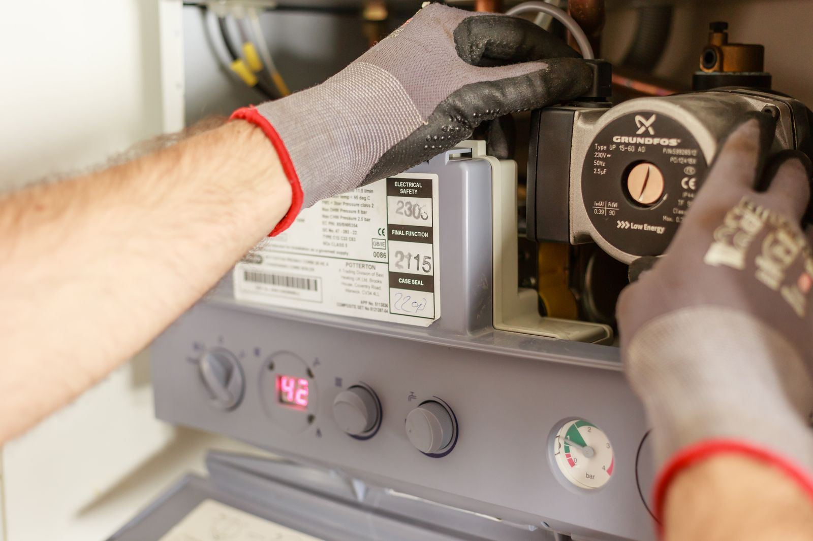

Tankless units are sophisticated machines, and that is both their strength and their weak spot. Instead of keeping forty or fifty gallons hot around the clock, a tankless heater comes to life only when water starts moving: a flow sensor detects demand, the control board fires the burner or elements, and water is heated on its way through the heat exchanger. Every step is watched by a sensor, and if any reading drifts outside its expected range, the board shuts the heater off and displays a code. For Pflugerville, TX homeowners, that usually traces back to a short list of causes: scale building up inside the heat exchanger, a sticking or dirty flow sensor, an ignition problem at the igniter or flame rod, or a venting or gas supply issue the unit reads as unsafe.
Pflugerville Water Heater starts every tankless repair by reading the unit, not guessing at it. On every service call in Pflugerville, we pull the active error code and the stored fault history, then test the components that code points to: flow sensor output while a faucet runs, flame rod signal in microamps, igniter resistance, inlet gas pressure both static and at full fire, and vent condition from the unit to the termination. Scale gets checked by comparing inlet and outlet temperatures against flow rate, since a heat exchanger that cannot transfer heat gives itself away in those numbers. A code tells us where to look, not what to replace. An ignition code, for example, can come from a worn igniter, a dirty flame rod, low gas pressure, or a blocked intake, and each one calls for a different fix.
The good news is that most tankless problems are very fixable. A descaling flush clears most mineral buildup, sensors and igniters are replaceable parts, and venting faults usually come down to a blocked intake or a loose joint. We carry common parts for the major brands and service both gas and electric units, so the typical repair is done in one trip. We are also honest about the harder cases: a unit fed by a gas line too small for its full BTU rating will keep throwing codes until the line is upsized, and a heat exchanger damaged by scale may not be worth repairing on an older heater. And if your complaint is the cold-water sandwich, that brief burst of cold between two hot draws, we will tell you whether it is normal for your model or something we can reduce. Is your tankless heater showing a code? Call (737) 422-3568 today.
Most of our service calls are for Water Heater Repair in Pflugerville. Either is a good place to start.

Warning Signs to Watch For
Most tanks announce trouble weeks or months ahead with rumbling noises, rusty water, or hot showers that keep getting shorter. Keep an eye out for the following:
- Temperature dropping sharply when a second shower or the dishwasher starts
- Moisture, rust, or drips appearing below the heater
- A clicking igniter with no flame, or a flame that lights and quickly drops out
- The display showing an error code instead of a temperature
- New whistling, roaring, or rumbling from the unit
- A heater that only fires when water runs at full blast
- Hot water that fluctuates even though nobody touched the faucet
- A cold-water sandwich that has gotten noticeably worse
Small Symptoms, Big Consequences
Tanks rarely fail all at once. They corrode from the inside for months, and the warning signs show up long before the floor gets wet. If you notice any of these signs, contact Pflugerville Water Heater at (737) 422-3568 for a prompt inspection.
Water Heater Trouble? Call Us.
Our experienced technicians are standing by to help.
Call (737) 422-3568 NowWhat Homeowners Ask Us Most
Why Professional Tankless Water Heater Repair Matters
From the outside a tankless heater looks like a plain box; inside, it is a tightly controlled system. A single error code can come from four or five different faults, and the sensors, igniters, and control boards involved are not cheap to buy on a hunch. Gas models add real hazards: the burner can fire at close to 200,000 BTU per hour, the vent carries combustion gases that contain carbon monoxide, and a loose gas connection or a vent joint that separates can put fuel or exhaust into the living space. Electric tankless units carry their own risk, often drawing well over 100 amps across several 240-volt circuits, so a loose lug or undersized wire can overheat quickly.
A trained technician with proper test equipment gets to the answer faster. Ours read the fault history, measure flame signal and igniter resistance, test flow sensor output, and check gas pressure under full load with a manometer, which is the only reliable way to catch a gas line that holds pressure at idle but sags when the burner ramps up. We descale with a circulating pump and the right solution, then flush thoroughly so nothing corrosive is left in your plumbing. Just as important, you get an honest opinion: if the heat exchanger is damaged on an older unit, we will say so before you spend money on a repair.
What to Expect From Our Team
Our workflow is simple and thorough, so nothing gets missed between the fuel supply and the relief line. Here's what you can expect when you choose Pflugerville Water Heater:
Read the Unit First
We pull the active error code and the stored fault history, then test the parts behind it: flow sensor, igniter, flame rod, gas pressure, and venting. That way we fix the actual cause, not just the code.
What We Found & What It Costs
No surprises. We walk you through the cause and the fix and give you the price up front. If the real problem is an undersized gas line or a worn-out heat exchanger, you will know before anything is spent.
Repair & Descaling
One trip is usually all it takes: a descaling flush, a new flow sensor, igniter, or flame rod, a cleaned inlet screen, or a corrected vent connection.
Tested Under Load
Before we pack up, we open fixtures at low and high flow, measure the temperature rise, and make sure the burner and vent perform at maximum output.
How to Prevent Water Heater Problems
Most of the failures we see could have been delayed for years with basic upkeep. Follow these tips from our technicians:
- Consider a water softener or scale-reduction filter ahead of the heater if scale keeps returning
- Treat a code that returns after a reset as a symptom worth diagnosing, not ignoring
- Flush scale out of the heat exchanger annually, and sooner in hard water
- Never cut power to an outdoor or garage unit in winter, because it needs electricity to protect itself from freezing
- Keep the vent termination and air intake clear of leaves, nests, snow, and lint
- Get the supply line checked before adding gas appliances, which can starve a tankless unit
- Rinse the small filter screen on the cold inlet every few months
Doing It Yourself vs. Hiring a Technician
Online videos may help in a pinch, yet lasting repairs and code-compliant installs depend on correct venting, proper relief valve discharge piping, and a trained technician. Here's how the two approaches stack up:
| Consideration | Doing It Yourself | Hiring a Pro |
|---|---|---|
| Reading the Code | Trial and error based on the manual | Fault history and live readings pinpoint it |
| Scale Removal | No pump or isolation valves | Proper solution, pump, and flush time |
| Combustion Safety | Gas pressure and vent joints unchecked | Manometer test at full fire, vent inspected |
| Board & Wiring | Live wiring inside the cabinet | Power verified off, board handled correctly |
| Parts | Generic parts that may not fit the model | Right part, installed once |
| Outcome | Temporary fix at best | Unit tested at low and high flow |
Let's Get Your Hot Water Back
Don't let a failing water heater get worse. Call Pflugerville Water Heater now for prompt, professional service.
Tap to Call (737) 422-3568Areas We Serve for Tankless Water Heater Repair
Our service area reaches well past the city limits. Choose your community for local details.